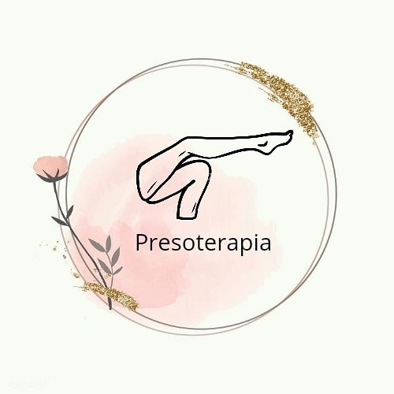
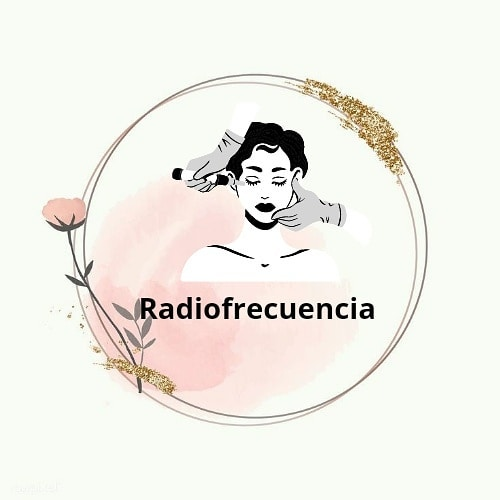

Tu cuerpo y rostro necesita de cuidados que te van hacer brillar
Es un tratamiento eficaz para reducir líneas de expresión, arrugas, minimizar estrías, cicatrices y marcas por acné.
Sus resultados son rápidos y visibles. Las cantidad de sesiones dependerá de cada caso, estado de la piel y cuidados post tratamientos.
BENEFICIOS:
⚠️Afirma, levanta y rejuvenece la piel.
⚠️Trata las marcas de Acne y Cicatrices quirurgicas.
⚠️Mejora la apariencia de las arrugas y las lineas de expresión finas.
⚠️Hidrata la piel, despigmenta y mejora el aspecto y luminosidad.

Reduce la celulitis en un 80%, modela el contorno corporal mejorando su apariencia en pocas sesiones. En este tratamiento se combinan 4 tecnologías:
radiofrecuencia bipolar, infrarrojos, vacumterapia y masajes de rodillos. Estimulando el aumento de la producción de colágeno y de elastina.
BENEFICIOS:
⚠️Se elimina la grasa localizada de piernas, cintura y brazos.
⚠️Modela el contorno corporal.
⚠️Reafirma la piel.
⚠️Se reduce la circunferencia corporal.
⚠️Se reduce la celulitis y la aparición de tejido graso.
Las sesiones de termoterapia tienen una duración aproximada de unos 30 a 45 minutos, dependiendo estacion del año.
Sus efectos se notan rápidamente y se mantienen en el tiempo.
Las sesiones se pueden realizar sin problema 1 vez por semana combinandola con BODY UP y cada 15 Dias con Drenajes con PRESOTERAPIA.
BENEFICIOS:
⚠️Este tratamiento reduce el volumen de adipocito localizado, logrando pérdida de peso.
⚠️Alivia dolores lumbares y cervicales.
⚠️Relaja y combate dolores musculares.